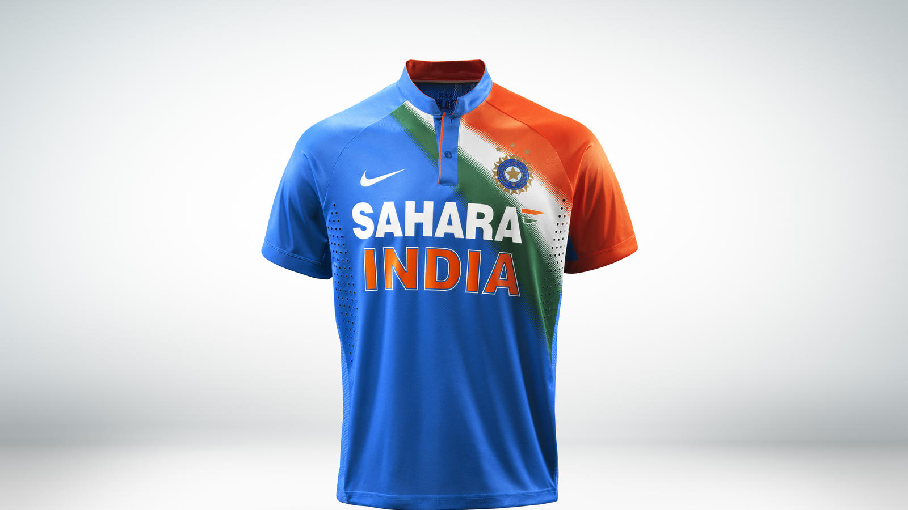
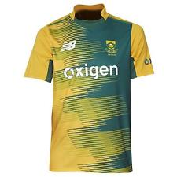
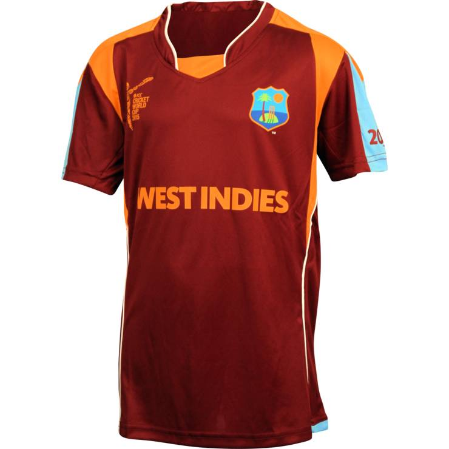
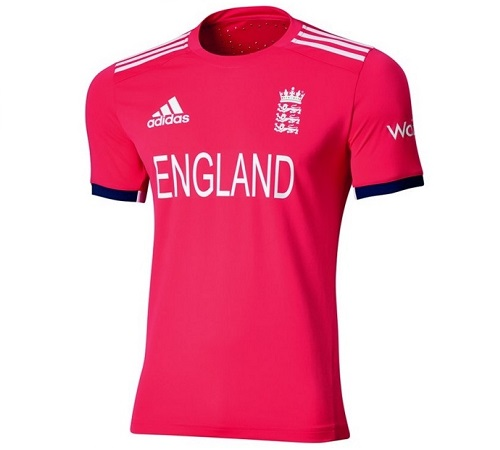
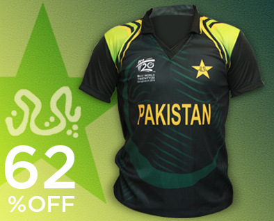
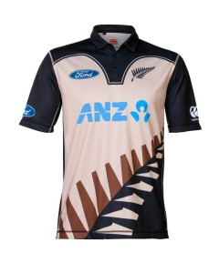
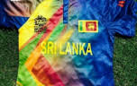

Ther are some teams that have been added new and it is there first world cup . OMAN , AFGHANISTAN
are the teams that have been added in this tournament . Old teams have full advantage to play in this tournament , last champions like
| TEAMS | JERSEYS | SQUAD-LIST |
|---|---|---|
| India |  | MS Dhoni (c) , Shikhar Dhawan , Rohit Sharma , Virat Kohli , Ajinkya Rahane , Yuvraj Singh , Suresh Raina , R Ashwin ,Ravindra Jadeja , Mohammed Shami , Harbhajan Singh , Jasprit Bumrah , Pawan Negi , Ashish Nehra , Hardik Pandya |
| South Africa |  | Faf du Plessis (c), Kyle Abbott, Hashim Amla, Farhaan Behardien, Quinton de Kock (wk), AB de Villiers, JP Duminy, Imran Tahir, David Miller, Chris Morris, Aaron Phangiso, Kagiso Rabada, Rilee Rossouw, Dale Steyn, David Wiese. |
| West Indies |  | Darren Sammy (c), Samuel Badree, Sulieman Benn, Carlos Brathwaite, Dwayne Bravo, Johnson Charles, Andre Fletcher, Chris Gayle, Jason Holder, Ashley Nurse, Denesh Ramdin (wk), Andre Russell, Marlon Samuels, Lendl Simmons, Jerome Taylor. |
| Australia | |
Steve Smith (c), David Warner (vc), Ashton Agar, Nathan Coulter-Nile, James Faulkner, Aaron Finch, John Hastings, Josh Hazlewood, Usman Khawaja, Mitchell Marsh, Glenn Maxwell, Peter Nevill (wk), Andrew Tye, Shane Watson, Adam Zampa. |
| England |  | Eoin Morgan (c), Moeen Ali, Sam Billings, Jos Buttler (wk), Liam Dawson, Alex Hales, Chris Jordan, Liam Plunkett, Adil Rashid. Joe Root, Jason Roy, Ben Stokes, Reece Topley, James Vince, David Willey. |
| Pakistan |  | Shahid Afridi (c), Ahmed Shehzad, Anwar Ali, Imad Wasim, Khalid Latif, Mohammad Amir, Mohammed Hafeez, Mohammad Irfan, Mohammad Nawaz, Mohammad Sami, Sarfraz Ahmed (wk), Shoaib Malik, Sharjeel Khan, Umar Akmal, Wahab Riaz. |
| New zealand |  | Kane Williamson (c), Corey Anderson, Trent Boult, Grant Elliott, Martin Guptill, Mitchell McClenaghan, Nathan McCullum, Adam Milne, Colin Munro, Henry Nicholls, Luke Ronchi (wk), Mitchell Santner, Ish Sodhi, Tim Southee, Ross Taylor. |
| Sri Lanka |  | Lasith Malinga (c), Angelo Mathews, Dushmantha Chameera, Dinesh Chandimal (wk), Niroshan Dickwella, Tillakaratne Dilshan, Rangana Herath, Shehan Jayasuriya, Chamara Kapugedara, Nuwan Kulasekera, Thisara Perera, Sachithra Senanayake, Dasun Shanaka, Milinda Siriwardena, Jeffrey Vandersay. |